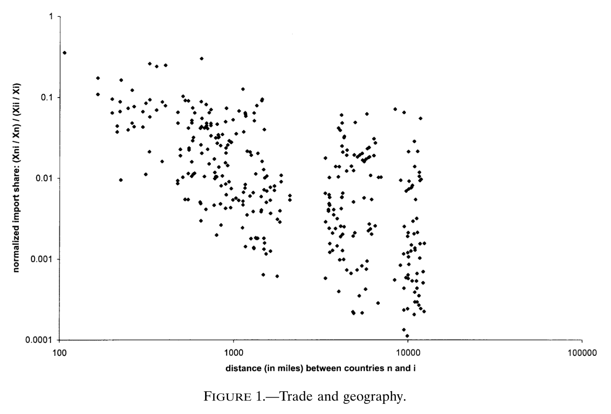

3 贸易、地理和价格初探
Section 3 这部分的代码和一部分细节说明可参见 EK2002 Code (R version): Estimation，同理还有 Section 5.
3.1 标准化的进口份额
在(2.10)中取 \(n\) 为 \(i\)，然后再相除，得到
\[ \begin{align} \frac{X_{n i} / X_{n}}{X_{i i} / X_{i}}=\frac{\Phi_{i}}{\Phi_{n}} d_{n i}^{-\theta}=\left(\frac{p_{i} d_{n i}}{p_{n}}\right)^{-\theta} \tag{3.1} \end{align} \]
(3.1)左边为 \(i\) 国产品在 \(n\) 国支出中的占比除以 \(i\) 国产品在 \(i\) 国支出中的占比，称为标准化的 \(n\) 国进口中来源于 \(i\) 国的份额（\(n\)’s normalized import share from \(i\)）。
- 这个值不会超过1。因为，\(\frac{X_{n i} / X_{n}}{X_{i i} / X_{i}}>1 \Rightarrow \frac{p_{i} d_{n i}}{p_{n}}<1\)，若该式成立，\(n\)
国消费的所有产品都可以从 \(i\) 国进口以节省开支（a purchaser in country \(n\)
can always buy all her goods in \(i\) at a price index \(p_{i} d_{n i}\)），这与
\(n\) 国选择了最低价格是矛盾的。
- \(i\)’s normalized share in \(n\) 的性质
- \(p_i/p_n\)↗ 或 \(d_{ni}\)↗ 使标准化支出份额下降
- \(\theta\)↗ 反映比较优势减弱，可贸易范围减少，使标准化支出份额下降。
- \(p_i/p_n\)↗ 或 \(d_{ni}\)↗ 使标准化支出份额下降
3.2 估计 \(\theta\)
(3.1) 两边取对数后，\(\theta\) 成为斜率。因此可以用这个方程估计 \(\theta\).
3.2.1 计算标准化进口份额
可以使用制造业进出口数据计算标准化进口份额。
在无贸易障碍的世界，\(d_{ni}=1, \forall n \neq i\)，所有的 \(\Phi\) 都相等，从而所有的价格水平 \(p\) 都相等，则由 (3.1) 知标准化的贸易份额将等于 1. 但现实数据显示，该份额从未超过 0.2，且在不同国家对之间差别很大——超过 4 个数量级，如 Figure 1 所示：

该图显示，纯粹的地理因素（距离）对贸易的影响相当显著。
3.2.2 计算 price measure
- 价格指数之比：取 50 种产品在样本国家中的零售数据，并进行对数化处理：\(r_{n i}(j) \equiv \ln p_{n}(j)-\ln p_{i}(j)\)。对这 50 种产品的 \(-r_{n i}(j)\) 取平均值，作为 \(\ln \frac{p_i}{p_n}\) 的代理变量（proxy）
- \(d_{ni}\) 不是简单的运输成本，而是对所有贸易障碍的衡量，无法直接计算，只能找代理变量。按照本文的理论，只有 \(n\) 国从 \(i\) 国进口的产品才满足 \(p_n(j)/p_i(j)=d_{ni} \Rightarrow r_{ni}(j)=\ln d_{ni}\)，\(n\) 国从第三国进口的产品 \(k\) 的价格比从 \(i\) 国进口更便宜，因此有 \(p_n(k)<p_i(k)\cdot d_{ni} \Rightarrow r_{ni}(k)<\ln d_{ni}\)。即 \(\ln d_{ni}\) 是 \(r_{ni}(j)\) 的上限，故有 \(\max\left\{ r_{ni}(j); j \in [0,1]\right\}=\ln d_{ni}\). 因此，用第二大的 \(r_{n i}(j)\) 作为 \(\ln d_{ni}\) 的代理变量（不选第一大是为了避免异常值的影响）。
- 以
\[ \begin{align} D_{n i} \equiv \max 2_{j}\left\{r_{n i}(j)\right\}-\frac{1}{50}\sum_{j=1}^{50}\left[r_{n i}(j)\right] \tag{3.2} \end{align} \]
作为 \(\ln ({p_{i} d_{n i}}/{p_{n}})\) 的代理变量13。
将 \(exp(D_{n i})\) 命名为 price measure，表示一个 \(n\) 国人若全部从 \(i\) 国购买商品，比实际的购买（充分按照比较优势）会贵多少（a buyer who insisted on purchasing everything from source \(i\), relative to the actual price index in \(n\), the price index for a buyer purchasing each goodfrom the cheapest source）。

一些计算出的 price measure 值，整理在 Table 2 中。
图中法国那一行显示，法国最便宜的货源在德国（第 1 列），从德国购买所有商品只需多支付 33%；最昂贵的货源是新西兰（第 2 列），从新西兰购买所有商品要多支付 142%。一个坚持从法国购买所有商品的海外居民，如果在比利时（第 3 列），将面临最小的惩罚（40%）；如果在日本（第 4 列），将面临最大的惩罚（140%）。
最便宜的外国货源通常在附近，而最贵的则在远处。从第 4 列来看，如果要求必须从某个外国来源购买所有的东西，大国通常会受到最大的不利影响（美国、日本出现最频繁）。

\(\max 2\{\}\) 表示第二大。原文中此式有误，勘误表中已经指出，见 TGT Corrections.pdf (google.com).↩︎